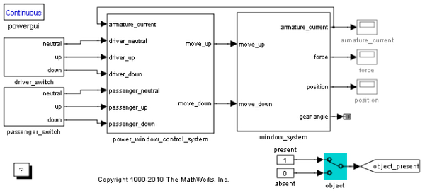
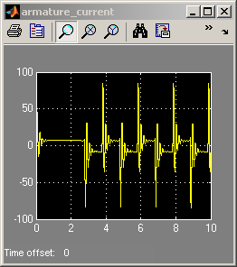
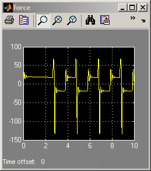

データ収集効果を使った Simulink® パワー ウィンドウ コントローラー
実装に移行する際には、制御に及ぼす可能性のあるその他の影響を考慮する必要があります。 このモデルには、電機子電流を測定するための信号調整、測定値の量子化などの現象が含まれています。
このパワー ウィンドウ デモを実行するには、SimMechanics™ と SimPowerSystems™、Signal Processing Blockset™、Simulink® Fixed Point™ をインストールしなければなりません。
  